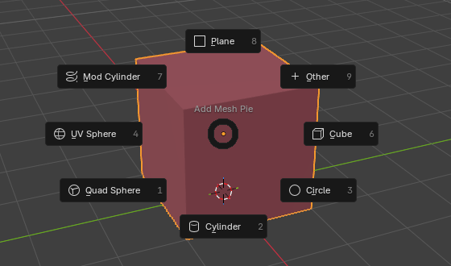
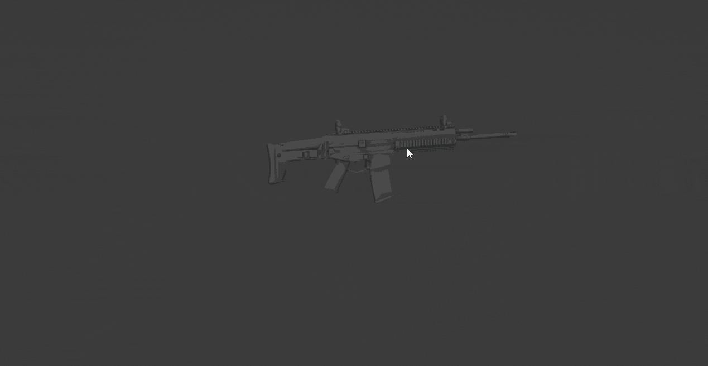
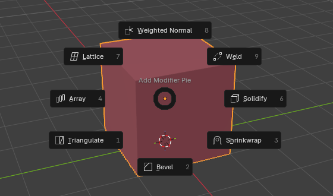
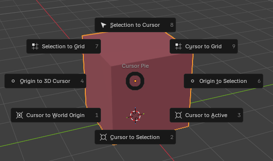
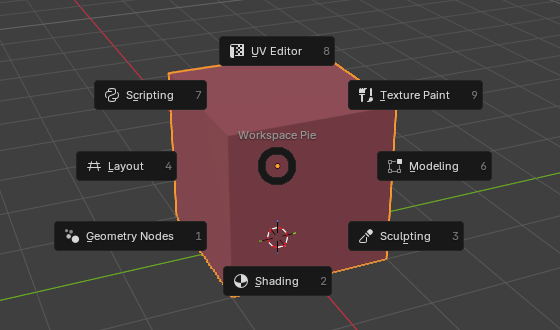
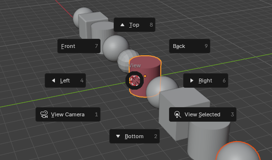
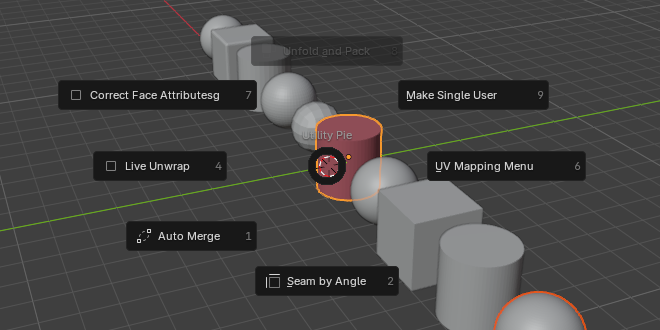
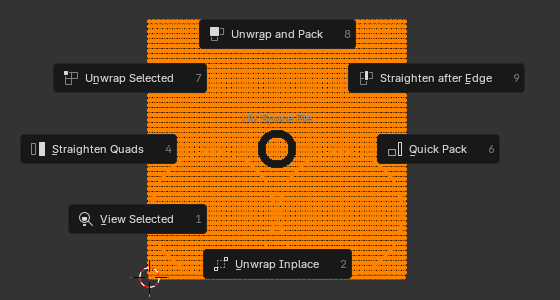
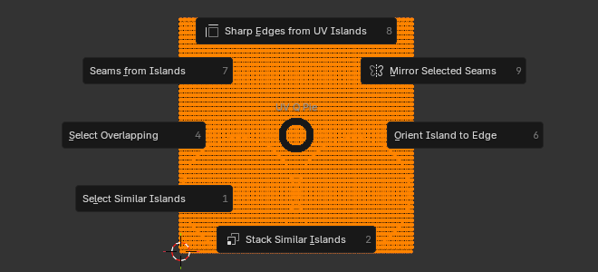

Pie Menus
Tap the key and click, or hold, flick and release.
Add Objects Pie
Shift Alt AAdd primitives sized to your view.


More info
- One click in the settings moves the pie to Shift A and back.
- Relative Scale, Screen Size, Min Size control the size. Size is used when Relative Scale is off.
- Top Right Option: Blender's Add menu, Empty, Monkey or objects from a .blend file.
Toggle in preferences: Add Objects Pie
Add Modifier Pie
Shift QOff by defaultCommon modifiers in one pie.

Cursor Pie
Shift SSnapping plus set origin.

More info
Origin to Selection also works in Edit Mode.
Toggle in preferences: Cursor Pie
Flatten Pie
Alt 3Flatten the selection from the view.
More info
Edit Mode, UV Editor
Lines up on the outermost selected point in that direction. In the UV Editor it lines up the selected UVs on the outermost selected UV.
Toggle in preferences: Flatten Pie
Workspace Pie
Shift \Off by defaultJump between workspaces.

More info
\ is the § key on Nordic keyboards.
A workspace that isn't in the file is added from your saved startup file.
Toggle in preferences: Workspace Pie
View Camera Pie
SpaceBlender's View pie on Space.

Utility Pie
UExperimentalMesh and UV helpers.

UV Pies
Space · QExperimentalUnwrap, pack and island tools.


More info
UV Editor
Needs Experimental.
Straighten Quads and Straighten after Edge need an extra add-on. Without it they are greyed out.
Unwrap in Place works up to Blender 5.0. Blender 5.1 removed the operator it relies on.
Toggle in preferences: UV Pies
Poll
Poll decides when a menu item shows: write a short test, and the item only shows while it is true. Empty means always shown.
| Write this | The item shows when |
|---|---|
mode == 'EDIT_MESH' | You're in mesh Edit Mode |
mode == 'OBJECT' | You're in Object Mode |
mode in ('OBJECT', 'EDIT_MESH') | Object Mode or mesh Edit Mode |
obj and obj.type == 'MESH' | The active object is a mesh |
not obj | There is no active object |
sel > 1 | Two or more objects are selected |
sel == 1 | Exactly one object is selected |
'BOOLEAN' in mods | The active object has a Boolean modifier |
'BEVEL' not in mods | The active object has no Bevel modifier |
len(mods) > 0 | The active object has any modifier |
obj and len(obj.material_slots) > 1 | The active object has more than one material |
space.type == 'IMAGE_EDITOR' | The menu is opened in the Image / UV Editor |
space.shading.type == 'SOLID' | The 3D View is in Solid shading |
space.shading.type != 'WIREFRAME' | The 3D View is not in Wireframe |
space.overlay.show_wireframes | The Wireframe overlay is on |
tool.use_snap | Snapping is on |
scene.render.engine == 'CYCLES' | The render engine is Cycles |
obj and obj.type == 'MESH' and obj.data.shape_keys | The active mesh has shape keys |
mode == 'EDIT_MESH' or sel > 1 | Edit Mode, or two or more objects selected |
values['Detail'] == 'HIGH' | Your own property Detail is set to High |
More info
Custom Menus › an item › Poll, and a menu's Menu Settings › Show When. The ? button next to it opens this page.
Show When on a menu uses the same tests: the whole menu only opens when the test is true.
Names you can use:
obj: the active object (can be nothing, so start withobj and ...)mode: the mode, like'OBJECT','EDIT_MESH','SCULPT','EDIT_CURVE'sel: how many objects are selectedmods: the active object's modifier types, like'BOOLEAN','MIRROR','SUBSURF'space: the editor under the mouse (bpy.context.space_data)scene: the scene,tool: its tool settingsCorcontext: all ofbpy.contextvalues: your own properties by name, likevalues['Detail'](see My Properties)
You can write settings with dots, compare with == != < <= > >= in not in, join with and or not, and use text in quotes, numbers, True, False, None, lists like ('A', 'B'), len() and [ ] to pick by name or number. Nothing else runs: no other functions, no maths. The test is read, never run as Python.
To find a setting's name, turn on Preferences › Interface › Python Tooltips and hover it. bpy.context.space_data.shading.type becomes space.shading.type, bpy.context.scene.tool_settings.use_snap becomes tool.use_snap.
A test that can't be read is reported once in the system console and the item is shown anyway.
A Poll on a group hides everything in it, up to its End Group.
Sidebar Panels
Build your own N panel from your own buttons, settings and Python, in any tab, with its own header, as a panel or inside another one.
More info
Custom Menus › New › Sidebar Panel
Popup menus, dialogs and sidebar panels take up to 1024 items, enough to rebuild a whole add-on panel. Groups (box, row, column, split, grid, panel), Same Row, Scale X and Y and Poll give the layout.
Header: under Works In, pick a Header Icon (click the icon button to choose one from the palette), Hide Header, Start Closed, an Order in the tab (lower is higher), and Inside to make it a sub-panel of another of your sidebar panels. An item with In Header on is drawn in the header, on the right, like a Prefs button.
Only In takes several modes: tick each mode the menu opens in. None ticked means any mode.
Preview (beside Only In) shows the preview as the menu looks in a chosen mode, or as Blender is right now: items whose Poll is false there are hidden. Every Item shows them all again for editing.
With a submenu open in the preview, click one of its items to edit that submenu right there (the menu above stays open; click one of its items to go back). Drag an item onto another menu open in the preview to move it there, into a submenu or back out of it.
Draw Code (an item's Type): Python that draws straight into the panel each time it redraws, like an add-on's own draw(). Use it for what items can't build, such as lists, templates or a row per object. Names ready to use: layout, context (C), bpy, D, values, icon("keyops:name") and draw_panel("SOME_PT_name"), which draws any registered panel (Blender's or another add-on's) right there, so a whole panel can go inside yours. An error shows in red where the code would draw, and the rest of the panel still draws. It runs on every redraw, so only import menus with Draw Code from people you trust.
My Properties (under the menu list): numbers, toggles, text and Choices of your own. For a choice, write its options separated by commas, like Low, Medium, High. Stored On picks where it lives:
- Key Ops: kept with Key Ops' settings, the same in every file. Path
values:Name. - Scene: a real property of every scene, saved in the .blend. Path
scene.keyops_name. - Object: a real property of every object, saved in the .blend. Path
object.keyops_name(the active object). - Window Manager: for this session only. Path
window_manager.keyops_name.
Put the path in a Setting item to show it in a menu or panel. Polls and Draw Code read them as values['Name'].
Hide Blender UI
A button that hides one of Blender's panels, menus or headers, and shows it again.
More info
Custom Menus › Add › Hide Blender UI
Pick the panel, menu or header from the list. Pressing the button hides it, pressing again shows it. Hidden parts stay hidden after a restart and all come back when Key Ops is switched off.
Operator Parameters
Every option of the operator a button or macro step runs, as fields.
More info
Custom Menus › item › Operator Parameters dropdown · macro step gear button
A dropdown right in the item card with all of the operator's options (Add Modifier's type, Bridge Edge Loops' twist and cuts, ...), drawn like the operator's own redo panel with its ranges and units. A change is stored in the item straight away; Reset to Defaults clears them. The gear on a macro step opens the same fields under that step.
Draw As
Each item's Draw As (in its Drawing section) picks how Blender draws it, so a menu or panel can look like any of Blender's own.
| Item | Draw As | Looks like |
|---|---|---|
| Menu | Automatic, Button, Dropdown, Inline | Hover submenus in popup menus, as in the Add menu. Inline draws the menu's own items in place |
| Key Ops Menu | Button, Group | Several buttons in one pie direction: a box, column or row. Add Group above a pie makes one |
| Operator | Button, Dropdown, Buttons | Add › Empty (one choice option as a dropdown), the select mode buttons |
| Setting | Dropdown, Tabs, One Option | Render engine, shading tabs, the pivot point buttons |
| Setting | Search | Parent, material and vertex group pickers |
| Setting | List, Data-Block | Material slots, UV maps, vertex groups, the material selector with New |
| Setting | With Popover | The snapping button in the 3D View header |
| Setting | Icon Picker, Color Wheel, Color Ramp, Curve, Palette | Blender's own editors for those |
More info
Custom Menus › an item › Draw As
Some styles need a second path, asked for right under Draw As: Search In (e.g. bpy.data.objects), Active Index for a List (found by itself for most of Blender's lists), Option for One Option, New for a Data-Block and Panel for With Popover. A Dropdown or Buttons operator names its choice option, e.g. type.
Setting paths can start with bpy.data. or D. and use indexes: scene.transform_orientation_slots[0].type, object.modifiers["Bevel"].width. A setting with several values (location, a layer mask) has an Index for one of them.
Under Drawing: Enabled off greys the item out and stops clicks, Active off only greys it. Invert ticks a checkbox while its setting is off. Keyframe Button adds the keyframe dot. A separator can be a Spacer: in a row it pushes the rest to the far end, like a header. A popup menu with a list or an editor opens as a popup panel. A pie's Add Group puts a group in the next free direction and opens it to fill: its buttons are a small menu that belongs to the pie, and the pie item sets the group's look (Box, Column, Row, Align, heading). Anything else Blender can draw: a Draw Code item.